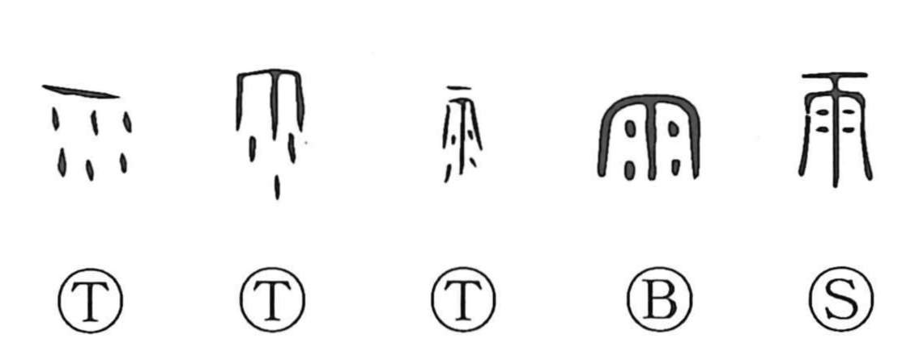

雨

Kun: ame, ama | On: u
rain ・ to rain
Explanation
A pictograph of rain falling from the sky: the ancient forms show the canopy of heaven with drops descending beneath it. It names the rain itself and, by extension, the act of raining. As a graphic element, 雨 is set like a crown atop many characters for atmospheric and watery phenomena—clouds, snow, hail, frost, mist, haze, dew, and drops—seen in graphs such as 雲, 雪, 霰, 雹, 霜, 霧, 靄, 露, and 零, as well as the character for long, steady rain. In this way the sign for rain gathers a family of weather characters under its “rain crown.”